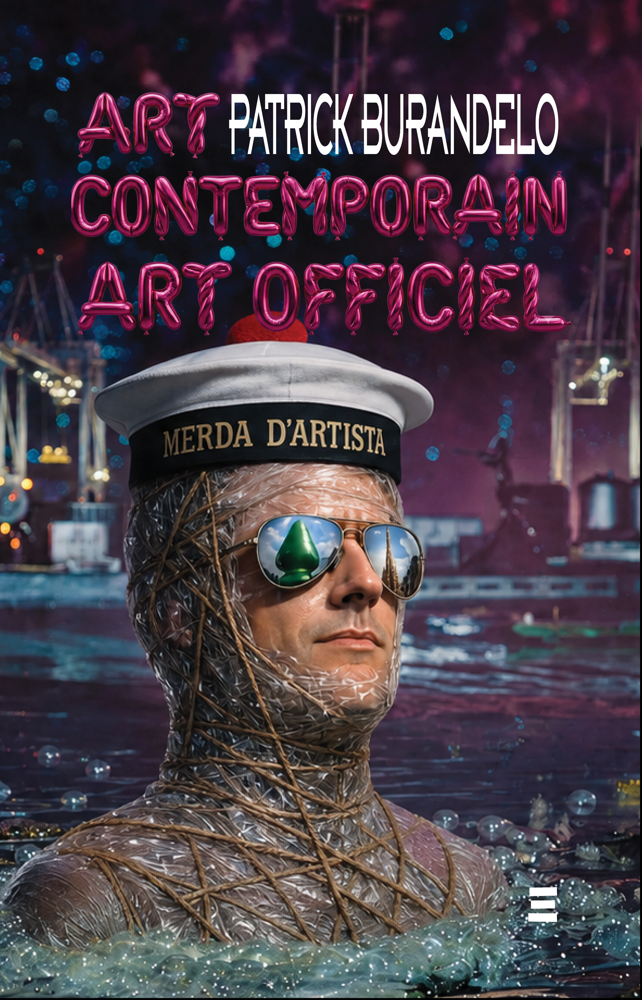
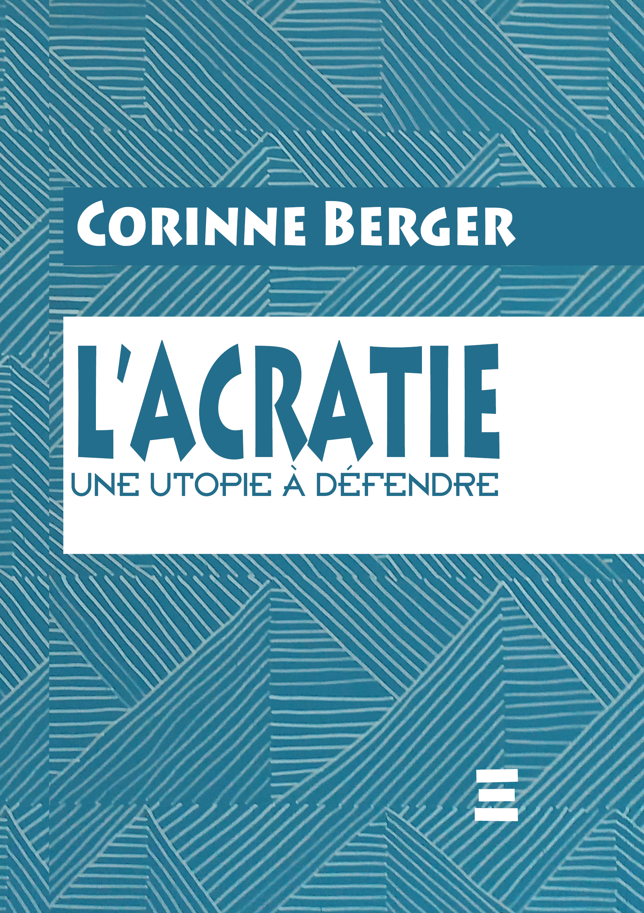

Essai — Réflexions chevalines
Incitatus
Jacques Thomas
Incitatus : le cheval de l'Empereur Caligula, fait Sénateur, logé dans une écurie de marbre, nourri d'avoine parsemée de paillettes d'or. Figure de l'excès qui tourne au ridicule, il devient ici le prétexte à de libres réflexions sur le comportement humain — et sur ce que nous devons, en vérité, à ces compagnons d'aventures que furent les chevaux dans la guerre, le transport, l'agriculture et le sport.
Biographie de l'auteur
Élève Officier à l'École Nationale des Haras (Haras du Pin), éleveur de Pur Sang durant vingt ans dans le Perche, directeur de l'Hippodrome de Lyon Parilly pendant huit années, co-créateur avec son fils de l'Agence Equicom, première agence française de conseil et de réalisation d'événements équestres.

Roman
Le Maître des fous
Pierre-Henri Murcia
Fernando Carvalho se retrouve malgré lui happé dans les filets du FSB — pour retrouver Nina Kazakova, femme énigmatique aux origines russes, peut-être espionne, peut-être maîtresse cachée du président Popov. Le Maître des fous est une comédie de l'imposture, une parodie de l'éternelle méfiance entre l'Occident et la Russie, traversée par le fantôme d'Alexandre Ier et la figure du moine errant Fiodor Kouzmitch. Récit à tiroirs emboîtés comme des poupées russes — où chaque mensonge est la condition d'un amour possible.
Biographie de l'auteur
Pierre-Henri Murcia est né en 1965 à Noisy-le-Sec et a grandi du côté de Pézenas. Ouvrier du bâtiment et œuvrier en littérature, il s'emploie à faire de la théorie mimétique de René Girard — ce déchiffrement du désir et du mensonge — une matière romanesque vivante et lisible. Le Maître des fous, achevé en 2022 et auto-imprimé à quelques exemplaires, est son premier roman : il précède ses deux publications aux éditions Localement Transcendantes — Comment rater sa vie de couple à coup sûr (2025), accueilli sur Babelio comme « un premier roman d'une ambition rare dans le paysage littéraire actuel », et L'écume de tes yeux (2026), dont Martine Chifflot, autrice et réalisatrice, dit qu'il « s'impose à lire d'une traite ». Le Maître des fous paraît ici pour la première fois dans une édition publique.

Essai — Critique d’art
Art Contemporain, Art Officiel
Patrick Burandelo
L’art contemporain posé en tant qu’absence d’art impose d’interroger notre nature sur le plan des besoins d’imitation de modèles qui élèvent et donnent du sens à l’existence. Quand l’objet de l’étude se dérobe, il ne reste qu’à étudier introspectivement ce qu’attend le sujet de cette institution vacante — de la même façon qu’une zone cérébrale blessée révèle sa fonction par son absence. Une thèse originale et ardue : la négation de l’art est une idéologie de fait, non formulée, mais redoutable en termes de confusion cognitive.
Biographie de l’auteur
Né en 1965, ingénieur de formation spécialisé en modélisation, Patrick Burandelo a découvert le dessin figuratif avec passion avant de s’improviser critique d’art — à la manière d’Aude de Kerros — pour comprendre ce qui s’est passé dans sa génération. Il mène en parallèle une réflexion approfondie sur l’art africain, inventeur de l’abstraction, et sur l’injustice qui lui a été longtemps faite.

Essai — Théorie politique
L'acratie
Une utopie à défendre
Corinne Berger
L'État, l'entreprise, l'association : trois institutions censées organiser la vie commune, aujourd'hui prises dans des logiques contradictoires — le marché envahissant le service public, la concurrence percutant la solidarité, la hiérarchie s'imposant comme une évidence. Corinne Berger refuse ce constat résigné et revisite l'acratie, idéal de société qui met à distance toute forme d'exploitation et fait confiance à la liberté de jugement de chacun. Non un monde sans État ni sans entreprise, mais des structures plus modestes — territoires autonomes et fédérés, statut social garanti, État recentré sur ses principes plutôt que sur son pib. Une utopie : au sens où elle mesure ce que le présent refuse d'imaginer.
Biographie de l'auteure
Corinne Berger est juriste en droit public. Ses recherches, engagées dès le DEA à l'université de Bordeaux I, l'ont menée des questions institutionnelles aux problématiques sociales et environnementales, au service des collectivités locales. Elle est aujourd'hui chargée d'études au PEAL et rédactrice de La Lettre du PEAL.